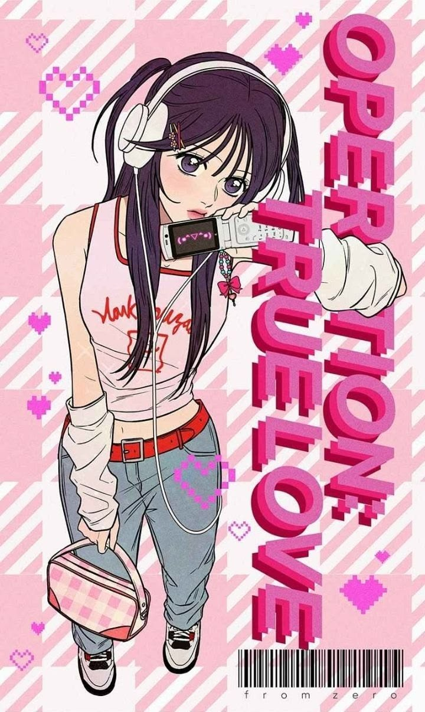

Y2K Fashion
The fashion in Operation True Love heavily reflects early 2000s Korean streetwear aesthetics. The outfits feature layered tops, low-rise jeans, chunky accessories, mini handbags, and soft pastel tones associated with the Y2K era.
Su-ae’s outfits especially combine feminine styling with casual everyday fashion, making the characters feel modern while still nostalgic.
On the other hand, both the male leads, Go Eunhyeok and Baek Dohwa are usually seen in nicely styled 2000s casual street wear male fashion.